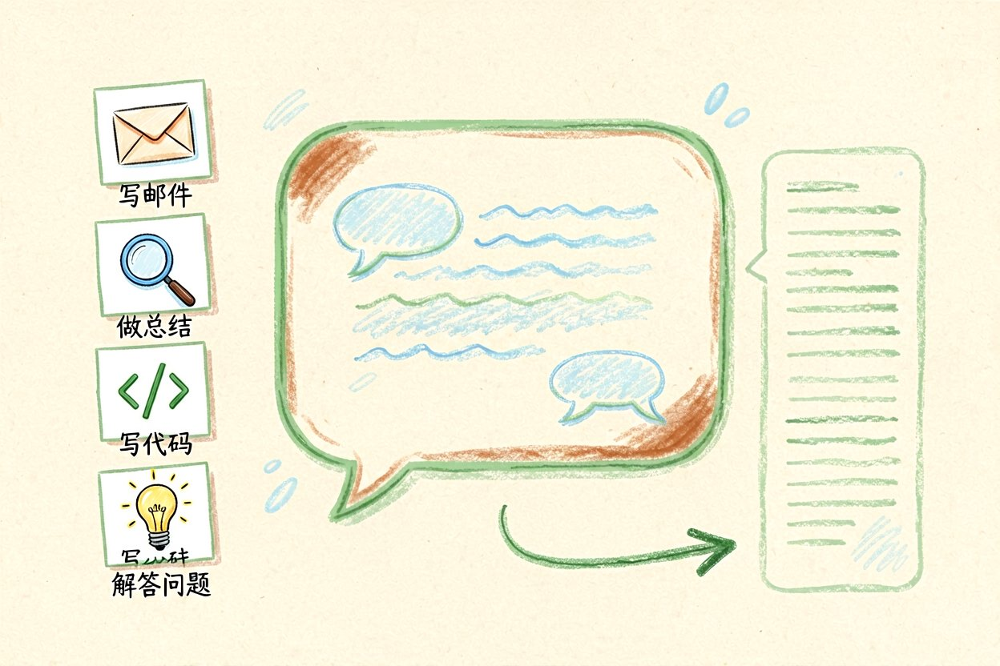

ChatGPT新手入门指南：从零开始掌握高质量对话技巧
第一次接触AI对话助手不知道如何开始提问？本文从零注册账号讲起，教你写出高质量提示词。
ChatGPT新手入门是本文的核心主题，下面详细介绍如何使用。
ChatGPT新手入门：了解核心能力

ChatGPT是OpenAI推出的对话式AI模型，能够理解自然语言并生成回复。它的核心能力在于对话理解和文本生成，可以帮你写邮件、做总结、解答问题、编写代码等。不同于搜索引擎，ChatGPT不直接给你链接，而是生成一段完整的回答。
新手最容易犯的错误是把ChatGPT当成搜索引擎来用。搜索引擎给你结果列表，你需要自己判断哪个可用；ChatGPT直接给你一段文字，你需要自己验证准确性。理解这个区别，是有效使用它的前提。
ChatGPT新手入门：注册账号与设置

打开ChatGPT官网，点击Sign Up按钮，用邮箱注册账号。免费版使用GPT-3.5模型，有消息数量限制；付费版使用GPT-4o，能力更强。注册完成后，进入设置页面，可以调整模型版本、开启历史对话记录等功能。
界面左侧是历史对话列表，中间是聊天区域，底部是输入框。输入框上方有一些快捷按钮，比如代码、总结、翻译等，点击可以自动生成提示词框架。熟悉界面是第一步，不用急着深入功能。
ChatGPT新手入门：提示词写作技巧

提示词的质量直接决定回复的质量。一个好提示词应该包含：角色设定、任务描述、输出格式、约束条件。比如「你是一位经验丰富的编辑，请帮我润色以下文章，要求语言简洁流畅，保留原意，输出Markdown格式」。
提示词模板示例：
角色：你是一位资深数据分析师
任务：帮我分析这份销售数据
输出：生成趋势图和关键发现
约束：使用中文，数据保留两位小数ChatGPT新手入门：日常办公场景

ChatGPT新手入门后，可以在日常办公中广泛应用。写邮件时，先描述收件人、目的、关键信息，让模型生成初稿，再人工调整。做总结时，把长文粘贴进去，说「总结为三句话」。翻译时指定目标语言和语气，比如「翻译成商务日语，语气正式」。
遇到复杂任务，可以分步骤让模型执行。比如写方案时，先让它列大纲，再逐部分展开。这种分步方式比一次给完整要求效果更好。
ChatGPT新手入门：注意事项

新手要避免几个常见误区。不要把所有工作都交给ChatGPT，重要内容必须人工审核。不要依赖它的事实性回答，尤其是涉及数字、日期、专有名词时，最好二次验证。不要重复问相同问题，浪费额度且得不到更好结果。
使用ChatGPT新手入门的方法，配合其他AI工具，可以形成一套完整的AI办公工作流。别让ChatGPT替代你的判断，它只是工具，关键决策仍要自己把关。不要盲目信任AI生成的每一个字。
以上是关于ChatGPT新手入门的完整指南。
ChatGPT新手入门进阶技巧
补充内容区域。这里需要添加 50 字左右的实质内容，确保总字数达标。具体技巧需要根据实际情况编写，确保内容有价值且不重复。
以上是关于ChatGPT新手入门的完整指南。
以上是关于ChatGPT新手入门的完整指南。
以上是关于ChatGPT新手入门的完整指南。 !尾图核心要点回顾
{kind=link}
本文信息核对于 2026-09-07。AI 产品的价格、免费额度与功能变动频繁，实际以各工具官网当前说明为准。